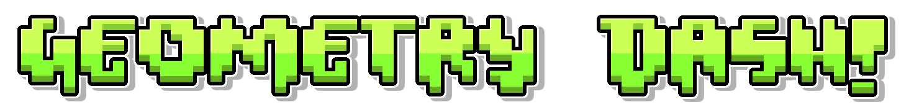

Hello and Welcome!
This website serves as a history archive on the rhythm-based platformer

Geometry Dash's Features Include...
- Rhythm-based action platforming
- Many levels with unique soundtracks
- Build and share your own levels using the level editor
- Thousands of high-quality user-generated levels
- Unlock icons and colors to customize your character
- Use practice mode to sharpen your skills
- Achievements and rewards
- Challenge yourself with difficult levels
- Steam users get two exclusive unlockable icons
The history of Geometry Dash
- In 2013, Robert Topala, also known as RobTop, or RubRub( ͡° ͜ʖ ͡°), started working on a game based on the 2009 platformer 'The Impossible Game' made by Fluke Games as a personal project. His goal was to create a game that was easy to get hooked on, combining rhythm-based gameplay with challenging platforming. The game's first version was called "Geometry Jump" and was released in August of that year. It included a basic level editor and only one level. However, the name was later changed to "Geometry Dash."
- The level editor in Geometry Dash is a defining feature that empowers players to create and upload their own levels onto the server. This has fostered a robust and imaginative community that has helped keep the game popular. Players have created intricate and challenging custom levels, some of which have gained widespread acclaim for their intricate designs and complexity. At this point there were only two gamemodes, the cube and the ship.
- Geometry Dash was first released on August 13, 2013, for iOS. The game was well-received for its engaging gameplay, captivating music, and having seven challenging levels which are Stereo Madness, Back on Track, Polargeist, Base after Base, Dry Out, Can't Let Go, and Jumper. As time passed, the game was updated with new content, including new levels, icons, colors, and more. The community grew as players designed and shared their custom levels.
- Update 1.1 was released on the 10th September 2013, which included a new level called "Time Machine". In this update, the ability to like and dislike user levels was added. Two new customisable icons and two colors were also added!
- Update 1.2 was released on the 14th October 2013, which a new level called "Cycles" was added. In this update, the new gamemode, the Ball was introuduced. Two new customisable icons were added!
- Update 1.3 was released on the 20th November 2013, which a new level called "xStep" was added. In this update, two new game mechanics, blue orbs and pads were released, and a leaderboard system was introduced. TEN new customisable icons were added!
- Update 1.4 was released on the 26th December 2013, which a new level called "Clutterfunk" was added. In this update, the new mechanic was a size portal that made the gamemodes smaller and more harder to control. A new color and four ships were added!
- Geometry Dash was then released on Steam on 22nd December 2014, which helped to expand the game's reach to PC players. Over time, the game has continued to receive updates with fresh content and features at least every few months, inspiring the community to create even more.
- Update 1.5 was released on the 30th January 2014, which a new level called "Theory of Everything" was added. In this update, the new gamemode, the UFO was released. Moreover, the ability for users to rate user levels as a demon, a new colour, four new cubes, and three new ships were added!
- Update 1.6 was released on the 25th March 2014, which two new levels called "Electroman Adventures" and "Clubstep", which requires 10 secret coins to be unlocked, were released. In this update, map packs, which are a collection of user based levels, were released. Three secret coins were added into all main levels, more new customisable icons were added and the first epic color, shadow black was introduced!
- Update 1.7 was released on the 21st May 2014, which a new level called "Electrodynamix" was added. In this update, new backgrounds, a new auto difficulty, a rainbow trail, four new cubes, four new ships, three new balls, and two new UFOs, a new colour mechanic, a new auto difficulty, a new speed mode (slow, normal, fast, very fast), and the glow feature was introduced!
- Update 1.8 was released on the 7th August 2014, which a new level called "Hexagon Force" was added. In this update, new editor features, tappable mainscreen icons, a new colour, four new cubes, two new ships, one new ball, one new UFO were added! The new mechanic called dual was also introduced this update!
- Update 1.9 was released on the 9th November 2014, which two new levels called "Blast Processing" and "Theory of Everything 2", which requires 20 secret coins to be unlocked, were released. In this update, a new user account system was implemented to save progress, the ability to select Custom Songs from Newgrounds for User Levels, four new colours, four cubes, two ships, two balls, two UFOs, and a new gamemode named, the wave was introudced!
- Update 2.0 was released on the 26th August 2015, which two new levels called "Geometrical Dominator" and "Deadlocked", which requires 30 secret coins to be unlocked, were released. In this update, user coins, a secret vault, lots of new editor features, friending, following and messaging on the user account systems, 4 new colours, 14 new cubes, 9 new ships, 10 new balls, 10 new UFOs, 11 new waves, 2 wave trails, and the new gamemode called the robot, that controls similarly to the cube but with a higher jump range, was introudced!
- This was the biggest update to ever come out for Geometry Dash and things were just starting to become good for the community. With the release of the 2.0 update, there was a noticeable change in the level design philosophy. Some players have expressed their opinion that the new levels are more focused on challenging tasks rather than creative and engaging design. This has sparked discussions within the community regarding the game's direction. However, as time passed, people learned how to use the 2.0 level editor features sparingly. Over time, individuals have become adept at utilizing the 2.0 features without excessive use while simultaneously achieving a balance between creativity and design.
- Geometry Dash Meltdown is a free app spin-off of Geometry Dash that is supported by ads. It was developed and published by RobTop Games. Released on December 19, 2015, for iOS and Android. the app includes three exclusive levels named "The Seven Seas", "Airborne Robots" and "Viking Arena" with limited achievements, icons, and collectables. Users can transfer exclusive unlockable data to the full version through their accounts.
- Geometry Dash has become a popular mobile game increasingly recognized for its competitive nature. The game's official levels were starting to becoming more complex and challenging. Some of the most notable levels include "Clubstep," "Theory of Everything 2," and "Deadlocked."
- In 2016, the Geometry Dash community was optimistic about the future. However, players were curious about the release date of the next update, "2.1". Prior to the release of 2.0, RobTop had mentioned that he aimed to have future updates completed within 1-2 months. Unfortunately, Update 2.1 took over a year to be released after its predecessor on August 26, 2015, making it the update with the longest development time so far.
- Update 2.1 was finally released just under 1 and a half years later on the 16th January 2017 for Steam, followed by its release on 18th January for iOS and Android, in which a new level called "Fingerdash" was added. This update included new jump rings, dash rings, custom gameplay rings, a red jump pad, a red 4x speed portal, 2 new shops, and 2 new vaults - the Vault of Secrets and the Chamber of Time. Additionally, the update introduced daily rewards, shards named the, "Shards of Power", in the form of fire, ice, poison, shadow, and lava, new editor features, mana orbs, diamonds, vault keys, five demon difficulties, an epic ranking, Gauntlets, a Hall of Fame, quests, daily levels, death effects, more commenting features, options, optimizations, many new icons, colours, and the new game mode, the Spider, which controls like the ball gamemode but the gravity change is instantaneous, was introduced!
- RobTop teased the upcoming features of the 2.2 update a few months after 2.1's release. The community calls the new game mode "swing copter", which was showcased in teaser images. A teaser image also hinted at the next main-level song, later confirmed as "Explorers" by Hinkik.
- RobTop released eight videos on YouTube highlighting several exciting features. These include camera controls, another one showing the screen stopping showing the cube platforming and changing directions, a trigger that can spawn random items selected by the user, a test level for the upcoming platformer mode, a new running animation for the robot (which may be an unlockable), a timewarp effect, animation testing, and a new running animation for the spider when it enters a 4x speed portal.
- After RobTop uploaded the example videos for "Fun with 2.2," fans became curious about the update's progress. As RobTop added more features to the update, it became more prominent. It has been approximately five years since players had lost hope of seeing Geometry Dash's highly anticipated update.
- The first glimpse of the upcoming Geometry Dash 2.2 update premiered on August 14th, 2021. It showcased one of the main levels set to be release. The preview highlighted new elements, such as the spider that can climb on walls and change direction and gameplay for the swing copter game mode, which has never been seen before.
- On September 4th, 2022, the second preview of version 2.2 was released. It highlighted a new demon level named "Explorers" with a soundtrack of the same name. This preview showcased some of the new features 2.2, including changing gravity and tight sections, indicating that the upcoming levels would be challenging. The preview was not a complete reveal, as it cut off before the song's climax, and the secret shopkeeper, Scratch, stated that the teaser was "long enough" before it faded out. The video then transitioned to a tower, which the community speculated might be related to platformer mode and the map. This upcoming feature will likely allow user levels and RobTop's new platformer levels to be placed before the screen fades to black.
- However, in 2023, RobTop's activity on the Geometry Dash Discord Server began to skyrocket, where he shared his progress on the update through pictures and videos.
- On May 15th, 2023, RobTop unexpectedly released the third sneak peek for the highly anticipated 2.2 update. The video displayed a snippet of a new platformer level, highlighting one of the latest features - sound effects - in conjunction with the level.
- On July 13th 2023, Robtop posted on Twitter, saying that with the 10th anniversary of Geometry Dash, he wanted to allow the players to share and highlight their favourite creators and moments throughout the years. This was looking bright for the Geometry Dash community as they have yet to have real news apart from the three sneak peeks and a couple of teaser images and videos from RobTop over the years. He also stated that more information regarding the 10th anniversary was coming.
- On August 3rd, 2023, RobTop announced on Twitter the release time for the 10th anniversary video of Geometry Dash in various time zones. He also mentioned that additional information would follow.
- The video premiere on August 13th, 2023, was only five days away. Viprin, a prominent member of the Geometry Dash community known for creating famous user levels, shared a teaser image that slowly filled in as the countdown continued. The poster was filled with references and moments from the past ten years of Geometry Dash, including LIMBO a hosted level, that includes creators such as MindCap and more, the "2.1 (changed to 2.2) soon" sign from Falling Up by Krazyman50 (also known as KrmaL), the famous medium demon "B", and many other references.
- On August 13th, 2023, Geometry Dash celebrated its 10th anniversary with a video premiere at 10:00 PM in Sweden's time zone. The video showcased clips from the community and featured appearances from well-known members such as Wulzy, KrmaL, Funnygame, EVW, Technical, Dorami, GD Colon, and others. The video also revealed a sneak peek of Geometry Dash 2.2, which included a platformer level previously seen in the first sneak peek in 2021. Fans noticed several differences in sound effects and visual cues; for the first time, a boss fight was previewed for that level. The fourth, and final teaser, revealed that Geometry Dash 2.2 will be launched in October 2023, which thrilled fans even though the update will be released later.
- October is fast approaching, and fans eagerly await the release of Geometry Dash's highly anticipated 2.2 update. This has been the longest wait the community has ever experienced, and the update is expected to bring a range of exciting new features to the game. These include a new game mode, the swing copter, two new main levels created by RobTop, a variety of editor features to alter gameplay and create unique designs, and the map, platformer mode, and the tower.
- It is 2 days into October, and fans have eagerly awaited the next update for Geometry Dash. In that time, RobTop updated the beta branch uploaded a few weeks ago onto Steam, which only he can access, presumably to work on 2.2 and find any bug fixes. He also changed his icon set for the first time in a while, using 5 new icons we had never seen before. 2.2 is set to drop anytime, as stated in the release window, and fans eagerly await RobTop to adhere to his promise.
- RobTop Games has confirmed that the second Geometry Dash 2.2 sneak peek level, Explorers, will be delayed until after 2.2. He said this has to be done in order to meet the October 31st deadline for 2.2, meaning he might actually get the update out this time.
- It was nearing the end of October and fans were wondering where the next update for Geometry Dash was. Sadly, RobTop came out on Twitter and said, "Unfortunately, 2.2 will not be coming in October as promised and is delayed to November. It just wouldn't feel right to release an update this big without stable servers and proper bugfixing. I tried my hardest to make it in time, but some work took longer than expected. All I can do is apologize and do my best in these final weeks. I'm really looking forward to sharing all these new features with the community. /RubRub" Upon hearing this, the community were quite dissapointed that RobTop revealed a release date confindent that it would release in that timeframe just for it to not come out upsetting a great deal of people.
- On October 21st 2023, RobTop uploaded the "Geometry Dash 2.2 Trailer" in order to showcase some new features that are being added into the game. There was no mention of the delay within the trailer, but some of the new features include the new level which has now been named "Dash", four new official platfomer levels, OVER 700 ICONS being added, DOUBLE the amount of 2.1's icons, and much, much more. The fans have never been this excited about the pending update, and the trailer was recieved very well from fans old and new!
- November came around, and a few weeks in, the beta branch on Steam has been updated almost 10 hours apart each time, which made people speculate that RobTop has finished bugfixing. This was a good sign for the community as it gave them a clue on when to expect the update.
- Suprisingly, out of nowhere, on the 26th November 2023, RobTop uploaded on X (previously Twitter) the following information, "Hey everyone! Progress update: All levels and major bugfixing are done, so update 2.2 is about to be completely finished for release. However, since I want to release it at nearly the same time for App Store, Google Play, and Steam, it may not be doable in November due to varying review times. I can confidently say it's right around the corner now, though, so stay tuned! /RubRub" This information that he shared on X, gained traction as the discord server went insane upon hearing this. Although he said 2.2 was basically finished, the update still had to be reviewed by Google Play, Apple, and Steam, which would take around one to two weeks. The update is set to be released early December and fans are eagerly waiting to get their hands on the update!
- On December 19th 2023, members in the community spotted an interesting change to the app store page, where it showed the privacy policy tab updated. This could only mean one thing. RobTop has submitted the update to all platforms and fans were eagerly awaiting the release of 2.2.
- At around 2:30 GMT+1, RobTop posted on X, "check steam", with a clip of Thanos from Avengers Inifnity War, sitting down relieved. It happened. The update was finally after a long long wait, released for all platforms!
- Update 2.2 was finally after a very, very long wait of 7 years, released on 19 December 2023 for Steam, Android and iOS. The update introduces the main level Dash, new camera controls, post-processing effects for levels and the swing form. Additionally, Update 2.2 added platformer levels allowing for free movement alongside four levels with the type in The Tower. It also added two new shops, numerous new icons, a second set of shards, Lists, and new customisation options such as ship trails and animations for certain gamemodes such as the Robot.